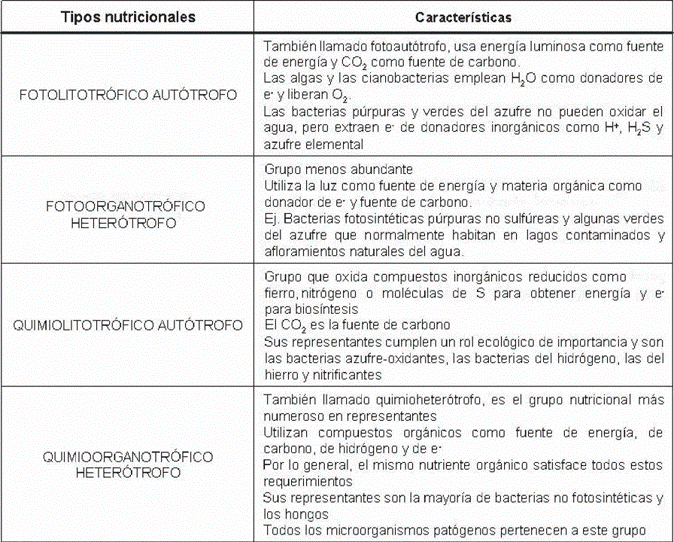

- Una característica clave de un sistema vivo es la capacidad de dirigir las reacciones químicas y organizar las moléculas en estructuras específicas: crecimiento.
- Las células microbianas están constituidas de sustancias químicas de una amplia diversidad de tipos y, cuando una célula crece, todos sus constituyentes químicos aumentan en cantidad apropiada.
- Los elementos químicos básicos de una célula, viene del exterior, pero estos elementos químicos son transformados por la propia célula en los constituyentes característicos.
Nutrientes
Se llama así a los productos químicos exteriores a partir de los cuales se construye una célula. Los nutrientes son tomados por la célula y transformados en constituyentes celulares. El proceso por el que una célula se construye a partir de nutrientes simples tomados del medio exterior se denomina ANABOLISMO (Biosíntesis).
La biosíntesis es un proceso que requiere energía, las células también necesitan de energía para otras funciones tales como movimiento celular (motilidad) y transporte de nutrientes.
Como otros nutrientes, la energía se obtiene también del medio exterior celular de tal manera que se pueden usar dos fuentes de energía:
Un determinado grupo de organismos obtienen su energía de la luz, la mayor parte lo hacen por oxidación de compuestos químicos. Los productos químicos utilizados como fuente de energía son rotos en constituyentes más simples, liberándose energía; a este proceso se denomina catabolismo.
- Luz
- Compuestos químicos
II.- TIPOS NUTRICIONALES
Dependiendo de la fuente de energía que utilicen, se agrupan a los microorganismos en clases metabólicas. Todos los términos utilizados para describir estas clases emplean la terminación “trofo” que deriva del griego y significa alimentarse.
Los microorganismos pueden ser agrupados en clases nutricionales de acuerdo a cómo satisfacen sus requerimientos de: energía, H+ / e- y carbono.
Existen sólo dos fuentes de energía disponible para los microorganismos y también dos fuentes de átomos de H+ / e-
Pese a la gran diversidad metabólica mostrada por los microorganismos, la mayoría de ellos pueden ser considerados en uno de los cuatro tipos nutricionales de acuerdo a su fuente primaria de obtención de energía, fuente carbonada y de e- / H+.

Un microorganismo puede pertenecer a uno de los cuatro grupos metabólicos, sin embargo, se observa en algunas una flexibilidad metabólica, como respuesta a cambios medioambientales marcados.
Ejemplo: Muchas bacterias púrpuras no sulfúreas actúan como fotoorganotróficas heterótrofas en ausencia de O2, pero oxidan moléculas orgánicas y funcionan quimioorganotróficamente a niveles normales de oxígeno: son las bacterias MIXOTRÓFICAS
III.- REQUERIMIENTOS NUTRICIONALES
Los nutrientes pueden ser divididos en dos clases:
Macronutrientes
Micronutrientes (Elementos traza)
Factores de crecimiento
IV.- OTROS
CO2
Ciertos microorganismos pueden desarrollar mejor si se les incrementa la concentración de CO2 en la atmósfera. Ej.: Haemophilus, Neisseria, Brucella, Campylobacter, requieren para iniciar el crecimiento al menos 5 a 10 % de CO2 en la atmósfera.
OxígenoEl oxígeno es un componente universal de las células y es suministrado siempre en grandes cantidades por el agua (H2O). Sin embargo, los procariotas muestran un amplio rango de respuestas al oxígeno molecular (O2).
- Aerobios obligados
- Requieren oxígeno para su crecimiento, ellos usan el O2 como un aceptor final de electrones en la respiración.
- Anaerobios obligados, o estrictos
- No requiere O2, no necesitan el O2 como un nutriente. De hecho, el oxígeno es una sustancia tóxica, el cual mata o inhibe su crecimiento. Los procariotas anaerobios obligados pueden vivir por fermentación, respiración anaeróbica, fotosíntesis bacteriana, o el primitivo proceso de la metanogénesis.
- Anaerobios facultativos
- Son organismos que pueden cambiar entre tipo de metabolismo aeróbico y anaeróbico. Bajo condiciones anaeróbicas ellos crecen por fermentación o respiración anaeróbica, pero en presencia de oxígeno ellos cambian a respiración aeróbica.
- Anaerobios aerotolerantes
- Son bacterias con un tipo de metabolismo exclusivamente anaeróbico (fermentativo), pero ellos son insensibles a la presencia de O2. Ellos viven solamente por fermentación sin importar si el oxígeno está o no presente en su entorno.
Hidrógeno
Los requerimientos de H+ están limitados al mundo microbiano a aquellas bacterias litótrofas que utilizan el hidrógeno como fuente de energía.
La concentración de iones de hidrógeno en términos de pH tiene mucha importancia. Cada especie tiene un pH definido de crecimiento y un pH óptimo:
En general, las bacterias son consideradas neutrófilas, los hongos en ambientes ligeramente ácidos (pH 4-6). Al margen de las variaciones de pH en el medio externo, en el ambiente interno de los microorganismos el pH se mantiene cercano a la neutralidad.
Ej. Organismos acidófilos como Thiobacillus ferrooxidans que vive en ambientes de pH 2 y tiene un pH interno de 6.0. La bacteria utiliza el gradiente electroquímico creado a nivel de membrana por esta diferencia de pH, para la síntesis de ATP.
Los microorganismos que crecen a un pH óptimo por debajo de la neutralidad (7.0) son llamados acidópfilos. Aquellos que crecen mejor a un pH neutral son llamados neutrófilos y aquellos que crecen mejor bajo condiciones alcalinas son llamados alcalinófilos. Los acidófilos obligados tales como algunas especies de Thiobacillus, realmente requieren un pH bajo para su crecimiento dado que su membrana se disuelve y la célula se lisa en la neutralidad. Varios géneros de Archaea incluyendo Sulfolobus y Thermoplasma, son acidófilos obligados. Entre los eucariotas, muchos hongos son acidófilos, y el campeón del crecimiento a pH bajo es el alga Cyanidium, el cual puede crecer a un pH de 0.

V.- REQUERIMIENTOS DE AGUA
La disponibilidad de agua depende de dos factores:
La Aw es inversamente proporcional a la presión osmótica. Si una solución tiene una alta presión osmótica su actividad de agua es baja.
Los microorganismos difieren grandemente en su habilidad para adaptarse en hábitat con baja actividad de agua, lo cual requiere alcanzar internamente una alta concentración de solutos que permita retener agua.
Osmotolerantes: Crecen en un amplio rango de valores de actividad de agua
Ej. Staphylococcus aureus, Saccharomyces rouxiiHalóliflos : Adaptados completamente a condiciones salinas, a tal grado que requieren altos niveles de NaCl en el medio para crecer (aprox. 3-6 M). Ej. Halobacterium sp.
VI.- REQUERIMIENTOS FÍSICOS
TemperaturaEs uno de los factores ambientales más importantes que influyen en la proliferación y sobrevivencia de los organismos. Conforme aumenta la temperatura, las reacciones químicas y enzimáticas en la célula tienen lugar a velocidades más rápidas, Sin embargo, más allá de cierta temperatura, las proteínas, los ácidos nucleicos y otros componentes celulares se vuelven sensibles a estas temperaturas elevadas y pueden inactivarse en forma irreversible.
Se distinguen tres grupos de microorganismos: